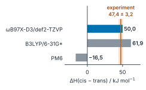
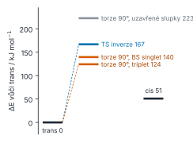
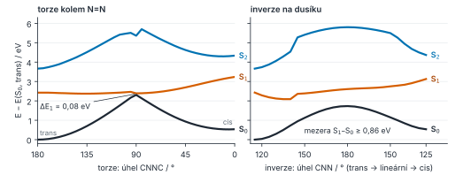
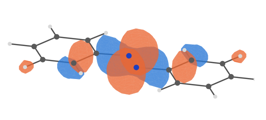
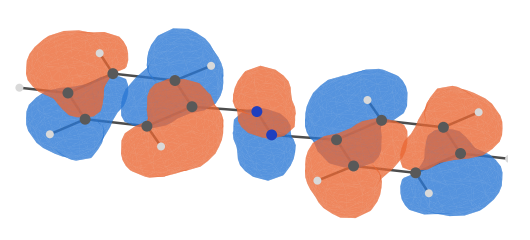
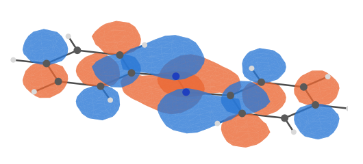

O tolik je trans-azobenzen stabilnější než cis. Rozdíl 2,6 kJ/mol leží v nejistotě měření; B3LYP/6-31G* ho nadhodnocuje a PM6 obrací.
Všechny výpočty v plynné fázi, bez rozpouštědla.




n (MO 29)
π (HOMO)
π* (LUMO)Orbitaly ZINDO/S, trans, izoplocha ±0,03.
| ΔE / eV trans | f trans | ΔE / eV cis | f cis | |
|---|---|---|---|---|
| S₁ n→π* | 2,42 | 0,000 | 2,65 | 0,011 |
| S₂ π→π* | 3,66 | 0,876 | 3,78 | 0,177 |